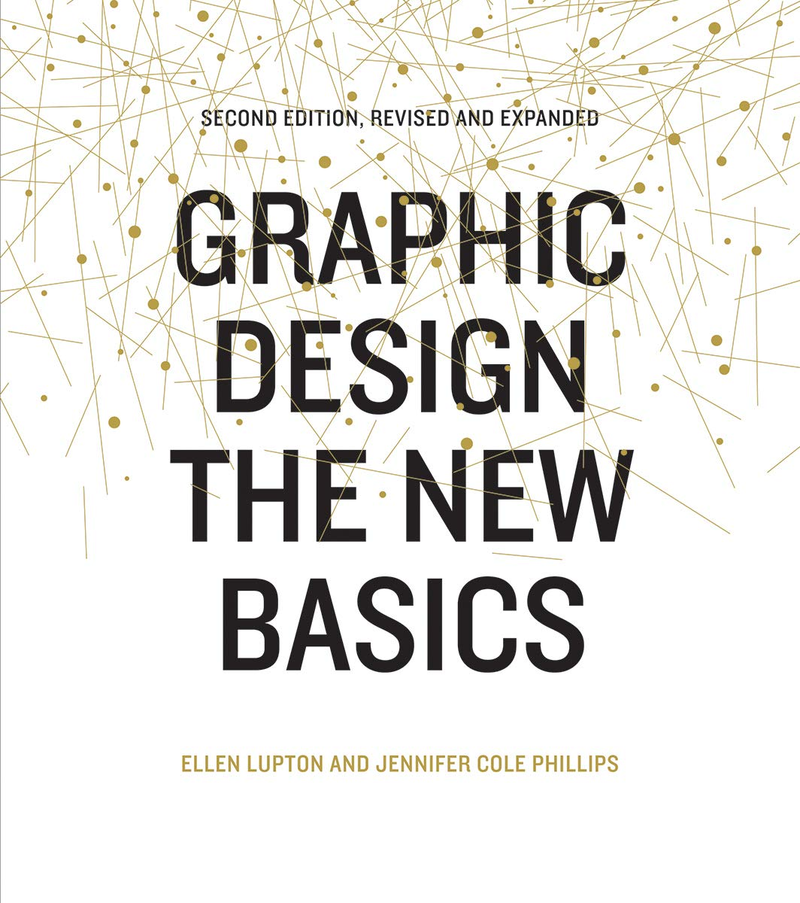

LIZ GLANCY
Speaking on June 20th
REEBOK Title: Footwear Designer II Dates Employed: Jun 2003 – May 2011 Employment Duration: 8 yrs Location: Canton, MA
Graphic Designer for RBK Footwear Dates Employed: 2003 – 2005 Employment Duration: 2 yrs Location: Canton, MA
Ellen Lupton
Speaking on June 21st
Author, Curator, and Graphic Designer Director of the Graphic Design MFA a Maryland Institute College of Art (MICA)
Books include: Graphic Design The New Basics (with Jennifer Cole Phillips, 2008) How to Design and Produce Your Own Book (2008) Thinking with Type (2004) D.I.Y.: Design It Yourself (2006) co-authored with her graduate students at MICA.
Jacob Lockard
Speaking on June 22nd
Atlanta-based Graphic Designer Senior Art Director at AKQA
Co-conspirator of the Baltimore community drawing event known as Drawnk! (now defunct), which was held the first Tuesday of every month at The Windup Space in Baltimore, MD. It was a community arts event that encouraged people to get together, draw, network and have a good time. Drawnk! conspirators were Rick Kercz, Justin Gilman & Josh Gilman. I'm always looking to start something new, so if you have a great idea and a reason to collaborate, I have a reason to join you.